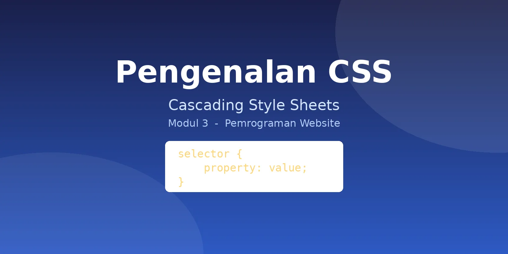

Pengenalan CSS
Mengenal Cascading Style Sheets sebagai bahasa pengatur tampilan halaman web, mulai dari alasan pemisahan struktur dan presentasi hingga tiga cara penerapannya pada dokumen HTML.

Apa Itu CSS
Tekan tombol putar untuk menonton penjelasan video, atau gunakan pemutar audio di bawah bila ingin mendengar hanya audio saja.
Cascading Style Sheets
CSS adalah bahasa yang dipakai untuk mengatur tampilan dokumen HTML: warna, jenis huruf, jarak antarelemen, hingga penyesuaian tata letak pada berbagai ukuran layar. HTML mengurus struktur dan makna konten, sedangkan CSS mengurus presentasinya.
Satu aturan gaya tersusun atas selector yang memilih elemen sasaran, lalu pasangan property dan value di dalam kurung kurawal yang menentukan aspek visual beserta nilainya.
-
Inline — gaya ditulis langsung pada
atribut
stylesebuah elemen. -
Internal — gaya diletakkan dalam
elemen
styledi bagianhead. -
Eksternal — gaya dipisah ke berkas
.csstersendiri lalu dihubungkan dengan elemenlink. Cara inilah yang dipakai halaman ini.